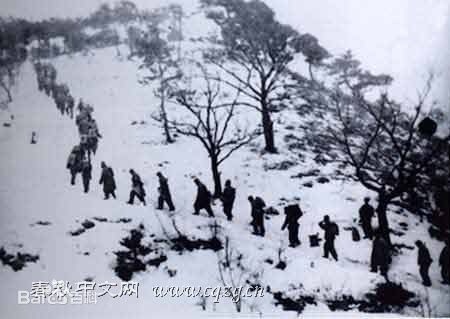
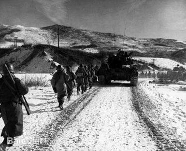
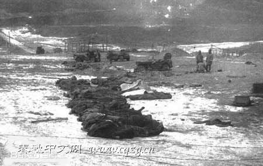
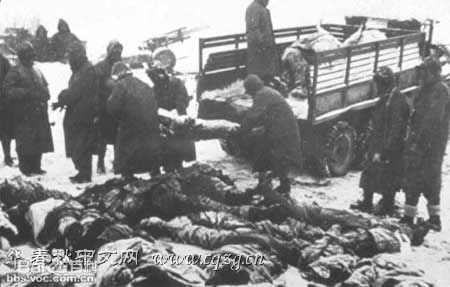

长津湖重要经过

围堵长隘路
11月27日傍晚，志愿军10万大军已经隐藏在朝鲜北部广袤的山地和丛林当中了，20军位于长津湖西侧；27军位于长津湖北部和东北部。两军分别以陆战1师两个团和第7师的31团级战斗队为主攻目标，后对下碣隅里进行围攻，继而在从下碣隅里至兴南的一条被称为“长隘路”的通道上展开围追堵截。

战斗打响
11月27日夜。美陆战第1师和美步兵第7师，当时正沿着一个山间的小路行进，整个队形成柱状，延伸达50公里。山林中忽然传出惊天动地的军号声和呐喊声，20军、27军向美军发起猛攻，10万志愿军将士以迅雷不及掩耳之势扑向美军，美军在毫无准备的情况下，遭遇到意想不到的攻击。在第二天的早上，美7师和陆战1师被九兵团分割成了5个部分。

全歼北极熊团
11月30日，27军集中两个师5个团的兵力由27军副军长兼80师师长詹大南统一指挥，并使用全军所有炮兵，围攻新兴里的美7师31团。这是朝鲜战争中，志愿军唯一一次成建制地全歼美军一个团的光辉战例，但与此同时27军80师和81师也付出了巨大代价，伤亡及非战斗减员高达1万人，全军冻伤高达22%。
美军突破包围
12月1日，当第26军在距离合洼里还有80公里的时候，美陆战1师终于突破了志愿军第20军的包围，开始向南撤退。9兵团总部随即命令第20军余部：追击美陆战1师，减缓他们撤退的速度，缠住他们，为第26军争取时间，为最终歼灭美陆战1师创造机会。

美军撤退
12月5日，美第10集团军军长阿尔蒙德向守在下碣隅里的史密斯下令：“尽快撤退到咸兴地区。”当日晚，下碣隅里所有的美军火炮开始向两侧山地猛轰。6日清晨，大撤退开始。但美军也没忘记在逃跑前彻底毁灭下碣隅里这个供给基地。美军先用炸药炸，然后用推土机碾一遍，最后将堆积如山的食品、衣服、弹药泼上汽油烧掉。
长津湖战役结束
1950年12月24日，亚洲时间的平安夜，美第10军从兴南港装船撤离，次日志愿军占领兴南，历时近一个月的长津湖战役，抗美援朝二次战役东线作战，同时也是整个二次战役落下帷幕。